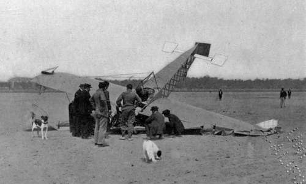

Chapter XI. The Flying Machine In War
Description
This section is from the book "The New Art Of Flying", by Waldemar Kaempffert. Also available from Amazon: The New Art of Flying.
Chapter XI. The Flying Machine In War
Unlike any battle that has ever been fought in the world's history, the battle of the future will be a conflict waged in three dimensions. Long before its artillery will have volleyed and thundered, each great military power will have endeavoured to secure the command of the air by building more dirigible airships and aeroplanes than its rivals. The fighting arm of a nation will henceforth be extended not merely over land and sea, but upward into the hitherto unconquerable air itself. Of all this we had some indication during the remarkable French military manœuvres of 1910. Then for the first time aeroplanes were tested under conditions that approximated those of actual warfare.
To the laymen the aeroplane's chief function in this battle of the future would seem to be the dropping of explosives on a hapless and helpless army below. The military strategist knows better. In the first place he knows that the actual amount of damage which could thus be inflicted would be disappointingly small. A hole may be torn in the ground; the windows of a few buildings may be broken; a battleship's superstructure may be blown away; but that wholesale destruction of life and property which would seem obviously to follow from the mere existence of military flying-machines, freighted with bombs and grenades, is not to be looked for. Even were it possible thus to destroy part of a stronghold, the difficulty of hitting the object aimed at is nearly insurmountable. Every small boy has attempted to hit some passer-by in the street with a missile hurled from a third-story window. Usually he failed, because the target was moving and because the wind deflected the projectile. The air-marksman is much worse off. Seated in a craft which is not only skimming at a speed hardly less than thirty-five miles an hour and possibly as great as eighty miles an hour, but skimming at a height of perhaps half a mile, the chance that he will ever be able to hit his target by making the proper allowance for the horizontal momentum which his bomb would receive, as well as for the prevailing wind, seems wofully remote. If bombs are to be dropped on forces below, it must be by means of tubes which will both project and direct the missile and which will be provided with wind gauges and height indicators for the proper guidance of the marksman. We must not allow ourselves to be misled by the skill displayed at flying exhibitions in dropping oranges on miniature battleships. Oranges are not bombs, nor are the heights at which they are dropped the half mile at which a military aeroplane must soar if it is to elude gun-fire.
Nevertheless some such possibility may have been at the bottom of the declaration signed by the delegates of the United States to the Second International Peace Conference held at The Hague in 1907, — a declaration which prohibited the discharge of projectiles and explosives from the air. The declaration reads:
" The contracting powers agree to prohibit, for a period extending to the close of the Third Peace Conference, the discharge of projectiles and explosives from balloons or by other new methods of a similar nature".
The countries which did not sign the declaration forbidding the launching of projectiles and explosives from air-craft were: Germany, Austria-Hungary, China, Denmark, Ecuador, Spain, France, Great Britain, Guatemala, Italy, Japan, Mexico, Montenegro, Nicaragua, Paraguay, Roumania, Russia, Servia, Sweden, Switzerland, Turkey, Venezuela.
To be effective, a bomb must be fairly large. Moreover, a considerable supply of bombs must be available. The aeroplane is a thing of comparative lightness. It cannot carry much ammunition of that sort. Hence, even admitting the possibility of dropping explosives upon any desired spot, the destruction wrought must necessarily be limited in extent. Lastly, there is also considerable danger in unbalancing the machine, by the sudden removal of the load from one side.
During the French manœuvres of 1910 no attempt seems to have been made to drop explosives from either airships or aeroplanes, an omission which implies the ineffectiveness of that mode of attack. In the war of the future the aeroplane will be employed primarily for the transmission of orders and despatches; for discovering an enemy in a region in which his presence is suspected, his strength and the disposition of his forces being unknown; for ascertaining the strength of an enemy at points where he is known to be located; and for collecting sufficient information to permit siege guns to plant their shells where they will be most effective. In other words, the future military aeroplane will do the work of a scouting force; for its chief function will be that of reconnaissance. Two men will be seated in its frame, one to pilot the machine, and one to sketch and photograph the terrane below. From the trained eye of the spy in the air nothing will be concealed. He will be like a vulture wheeling in the blue, watching for carrion below. The click of his camera-shutter may be a death-knell, for it will record instantaneously the position of some battery cunningly hidden behind a ridge, an earthwork thrown up across a pass, a stream spanned by military pontoon bridges. His pencil, when it touches the page of a notebook, may spell the death sentence of a regiment; for it will unerringly note those details of position and numbers which the photographic plate may not be able to register. When he has learned all that he can learn, he signals his companion to return. Hardly two hours may have elapsed since he was despatched on his quest. Yet within that time he may be able to give his commanding officer information that a regiment of cavalry could not have gathered with almost unlimited time.

Continue to: